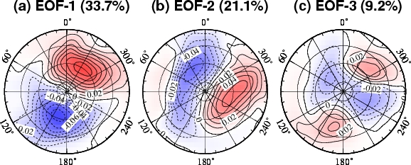
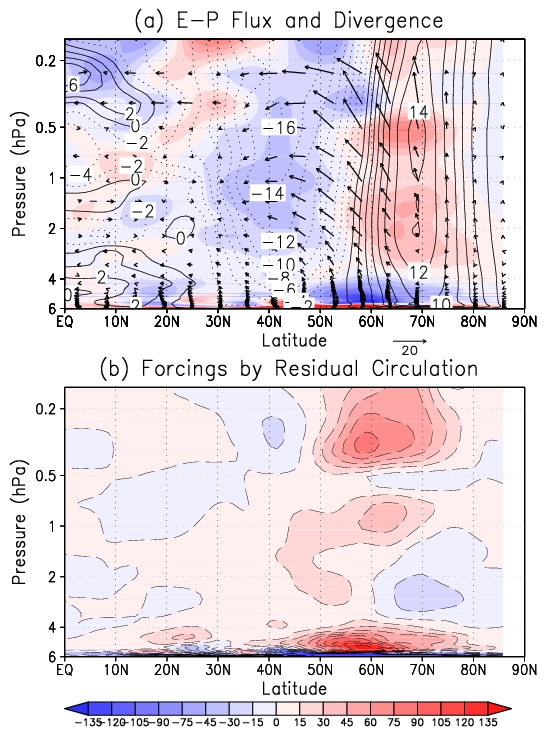

修士課程の研究内容
火星大気の環状モードとそれに関する波活動の役割
火星大気大循環モデル(GCM)を用いて再現された火星大気のデータに対して主成分分析を行い, １, ２番目に卓越するモード（EOF-1, 2）として波数１の傾圧的な波を取り出し(図１a, b), ３番目に卓越するモード（EOF-3）として環状構造を含むようなパターンを取り出しました(図１c).

図１: 火星GCMの地表面気圧に対して主成分分析を行い, 取り出された１〜３番目までのモード. (Yamashita et al. [2007], Figure 2)
取り出された環状モードと似たパターンの場合の平均から逆符号の場合の平均を引き, 環状モードと関連の大きな変動を見ると, 東西風は地表から40 kmまで同じ符号の構造を示しました. この構造には主に波数１の波による東西風加速が大きく関係していました(図２a).

図２: 波による西風加速(シェード)とE-Pフラックス(ベクトル, 波の伝播の違いに対応), 東西風の変化(コンター). 環状モードと似たパターンの場合の平均から逆符号の場合の平均を引いた. (b) 残差子午面循環による西風加速. (Yamashita et al. [2007], Figure 4)
取り出された環状モードと似たパターンの場合の平均から逆符号の場合の平均を引き, 環状モードと関連の大きな変動を見ると, 東西風は地表から40 kmまで同じ符号の構造を示しました. この構造には主に波数１の波による東西風加速が大きく関係していました(図２a).
- Yamashita, Y., T. Kuroda, M. Takahashi (2007): Maintenance of zonal wind variability associated with the annular mode on Mars,Geophys. Res. Lett., 34, L16819, doi:10.1029/2007GL030069.
- 山下陽介, (2006): 地球大気・火星大気の北極振動とそれに関する波の活動及び外部強制力, 平成17年度 東京大学大学院理学系研究科 修士論文, 63pp.
[top]